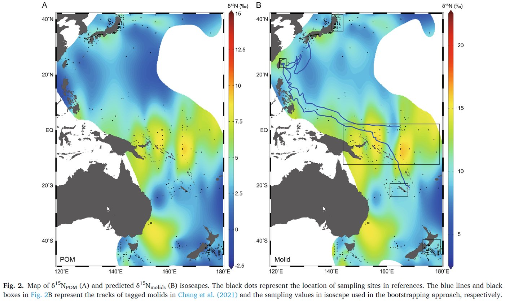
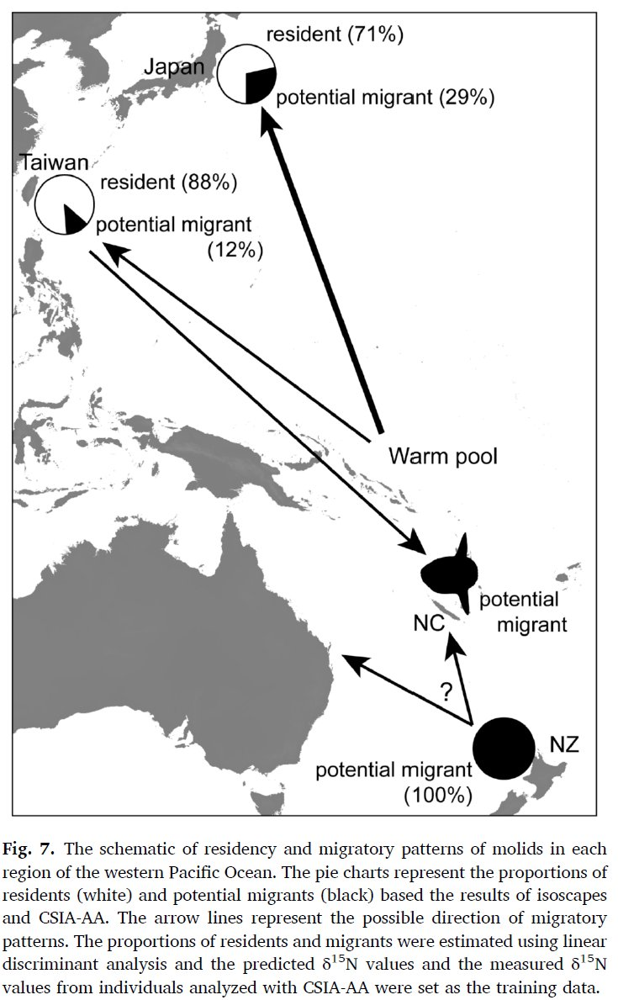
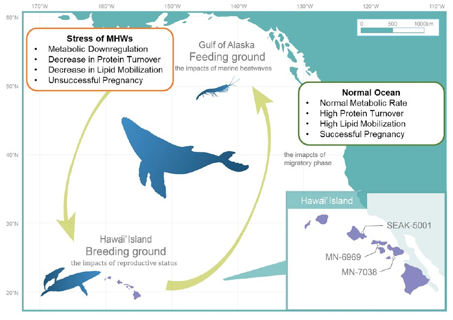
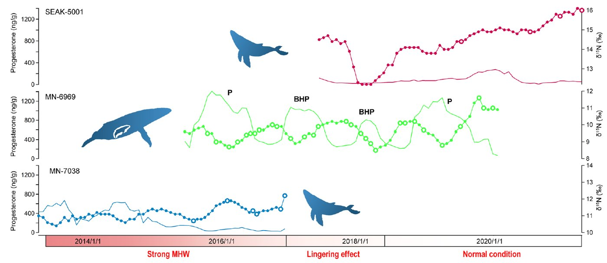
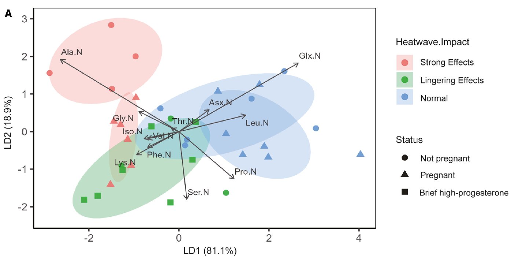
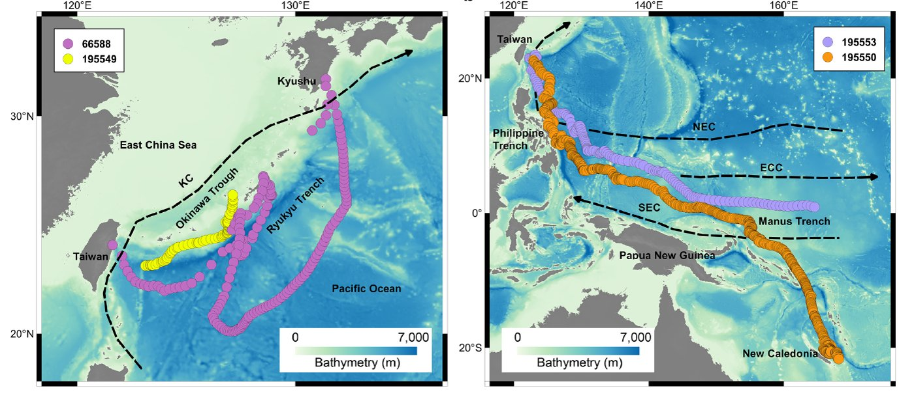
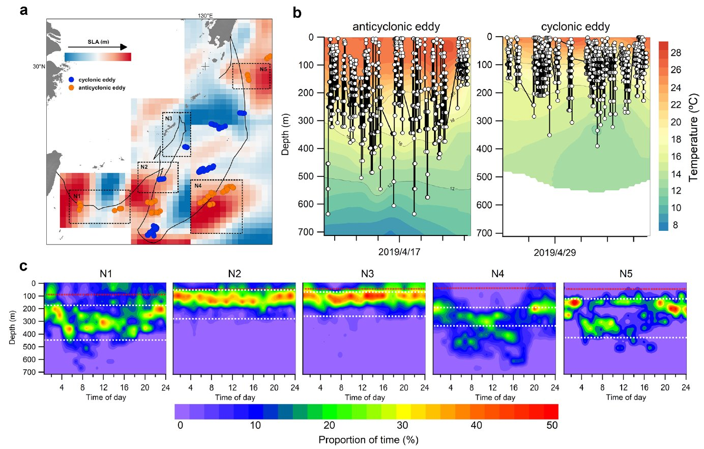

We use chemical tracers and electronic tags to follow marine animals through space, time, and food webs — and to ask how a changing ocean shapes their lives.
Using chemical tracers to study the migration and trophic ecology of marine species
Stable isotope values in an animal's tissues record where it has been feeding. By building isoscapes — maps of isotope values across ocean regions — and combining them with compound-specific isotope analysis of amino acids, we can distinguish resident individuals from migrants and reconstruct movement between regions.


Using chemical tracers to study nutrient use and its relationship with the environment
Amino acid isotopes reflect how animals use and allocate nutrients. We examine how physiological condition — such as metabolism and reproduction — responds to environmental stressors including marine heatwaves.



Using tagging techniques to study the movement ecology of marine animals
Satellite and archival tags reveal where animals travel and how they use the water column. We link horizontal movements and diving behavior to oceanographic features such as currents and eddies.

